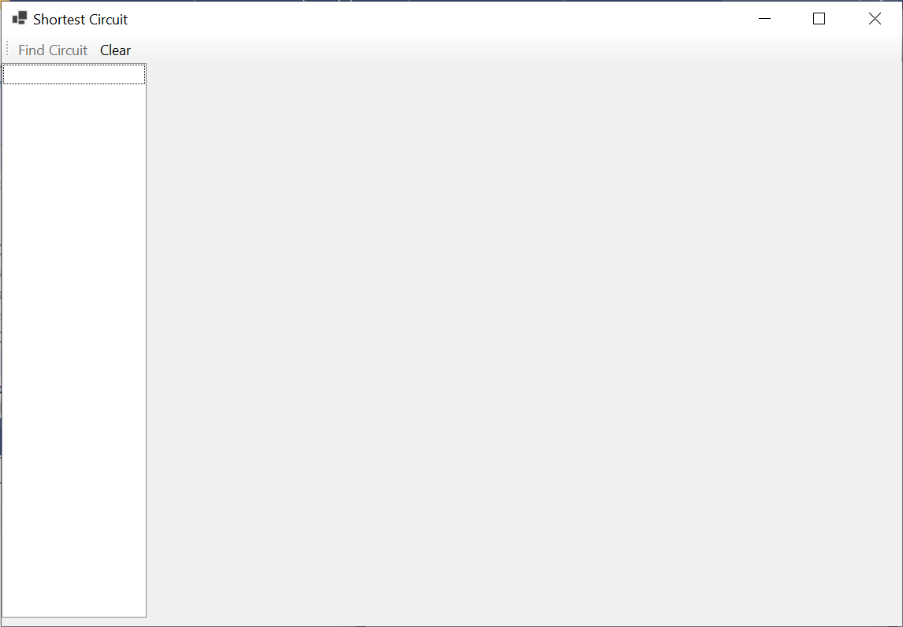
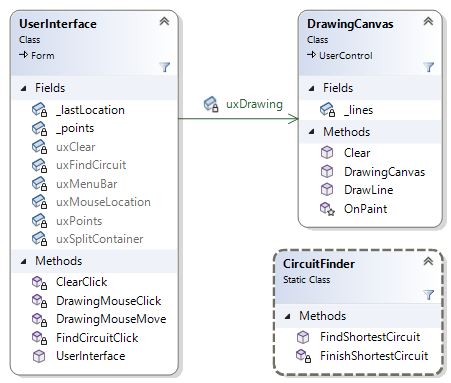
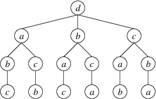

For this assignment, you will write a program to find the shortest circuit through a set of points in a plane.
Homework Assignment 3: Traveling Salesperson Problem0. Table of Contents1. User Requirements2. Starting the Assignment3. User Interface3.1. GUI Design3.2. Behavior of the GUI4. Software Architecture5. The Shortest Circuit Algorithm5.1. Exhaustive Search5.2. Pruning Long Paths5.3 Exploiting Symmetry6. Coding Requirements6.1. The CircuitFinder Class6.1.1. A private method to finish the shortest circuit beginning with a given path6.1.2. A public FindShortestCircuit method6.2. The DrawingCanvas Class6.2.1. An OnPaint method6.2.2. A public method to draw a line segment6.2.3. A public method to clear the control6.3. The UserInterface Class6.3.1. An event handler to handle a MouseClick event on the DrawingCanvas6.3.2. An event handler to handle a MouseMove event on the DrawingCanvas6.3.3. An event handler to handle a Click event on the "Find Circuit" button6.3.4. An event handler to handle a Click event on the "Clear" button7. Testing and Performance8. Submitting Your Assignment
A company is designing an embedded system that will contain several processors on a single board. They are considering several configurations of the physical layout in order to determine the best one. One of the factors they wish to consider is the total length of network cable needed to connect the processors. Because the system will use a token ring for communication, they need to connect the processors into a circuit. Thus, your program will need to find the minimum-length circuit that contains each processor exactly once.
This problem can be viewed as a special case of the Traveling Salesperson Problem. In that problem, we are given a set of cities with distances between them, and we need to find a minimum-length tour that visits each city exactly once before returning to the first city in the tour. In our version, the cities are the x- and y-coordinates of the processors on a flat surface, and the distances are just the straight-line distances between the points. Thus, for two points (x1, y1) and (x2, y2), the distance between these points is:
The traveling salesperson problem is a well-known computationally hard problem - even the best solutions cannot solve large instances in a reasonable amount of time. However, the number of processors in the embedded system is not expected to be more than 13; hence, even a rather simple approach can give acceptable performance.
The program should allow the user to select a set of locations from a rectangular area, giving feedback showing which points have been selected. It should be able to find a minimum-length circuit through these points, displaying the circuit and the length to the user. It should also allow additional points to be added after a circuit is found so that a new circuit can be found for all of the points.
Create a GitHub repository using the link provided on the Canvas assignment, and clone it to your local machine. The repository contains a new Windows Forms App in which the class Form1 has been renamed to UserInterface, along with an NUnit test project. You will need to provide the entire user interface design and all of the code.
The demo video shows the desired look and behavior of your finished program. Here, we will first summarize the GUI design with some instructions on how you will need to set this up. We will then summarize how the finished program should respond to various user actions.
Important: Don't start adding code until after you have completed the GUI design described in the following section, as errors in this code will interfere with the function of the Design window.
The finished program (not the start code) should display a GUI resembling the following:

At the top is a ToolStrip containing two buttons. After you add the ToolStrip, it will contain a drop-down from which you can select "Button" to add a button. You will need to change each button's DisplayStyle property to Text. You can then use its Text property to change the text displayed on the button. The "Find Circuit" button should be disabled initially.
Below the ToolStrip is a SplitContainer - you can find this control in the "Containers" section of the Toolbox. When you add it to the form, it will fill the entire area below the ToolStrip. You can then adjust the position of the separator between the two panes by dragging it. (Note: If the SplitContainer loses focus before you are finished modifying it, you probably won't be able to select it with the mouse. You should be able to select it by using the Tab key to cycle through all of the controls.)
The white box on the left is a ListBox - you can find this control in the "Common Controls" section of the Toolbox. You will need to add it to the left-hand pane of the SplitContainer. To make it fill this pane even when the pane's size changes, find the ListBox's Dock property. Click on the property's value, and from the drop-down, click the large rectangle in the center.
The large gray box on the left is a control that you will need to define. In the Solution Explorer, right-click on the project Ksu.Cis300.TravelingSalesperson (in bold face), and select "Add->User Control (Windows Forms)...". Name this control "DrawingCanvas.cs". This should open a new Design window for this control. The only modification you will need to make in the Design window is to set its DoubleBuffered property to True. This will cause updates to be made more smoothly. All other modifications will involve adding code (see Section 6. Coding Requirements below).
At this point, you will need to run the program in order to compile the DrawingCanvas class. Once you've done this, go back to your main Design window. The Toolbox should now contain "DrawingCanvas" at the top (you may need to scroll up). You can now add one to the right-hand pane of the SplitContainer. Dock this control as you did the ListBox.
Finally, in order to get a tool tip showing the location of the mouse on the DrawingCanvas, add a ToolTip to your form - you can find this control in the "Common Controls" section of the Toolbox. You don't need to change any of its properties - its behavior will be controlled by code that you add (see Section 6. Coding Requirements below).
This section details the behavior that you will need to implement, as described under Section 6. Coding Requirements below (see the demo video for examples).
When the user moves the mouse over the DrawingCanvas, a tool tip should show the location of the mouse within the DrawingCanvas. A click on the DrawingCanvas should cause a small "x", 3 pixels by 3 pixels, to be drawn at this location, and this location should be added to the ListBox. Once three points have been plotted in this way, the "Find Circuit" button should be enabled.
When the "Find Circuit" button is clicked, a shortest circuit containing the plotted points should be found and displayed as follows:
After a shortest circuit has been found, any subsequent clicks on the DrawingCanvas should plot additional points in the same way as above - the circuit should not be removed. Clicking the "Find Circuit" button, however, should remove any existing circuit prior to finding a new shortest circuit containing all the points. This circuit should be displayed as described above.
Clicking the "Clear" button and any time should remove everything that had been drawn on the DrawingCanvas, remove all locations from the ListBox, and disable the "Find Circuit" button.
If the form is resized, or the border between the ListBox and the DrawingCanvas is moved, both the ListBox and the DrawingCanvas should continue to fill their respective areas of the SplitContainer, and their contents should remain unchanged. If resizing causes some of the lines/points on the DrawingCanvas to be partially or completely outside of the visible area, enlarging the the form so that they are within the visible area should cause them to reappear.
The following class diagram shows the architecture of the program:

The UserInterface class implements the main GUI. The DrawingCanvas class implements the control on which line segments can be drawn. The CircuitFinder class is a static class containing the methods needed to find a shortest circuit. Because the class is static, no instances can be constructed, and all members must be defined as static.
The algorithm you will use to find a shortest circuit will be based on an exhaustive search of all circuits, with two optimizations. We will first describe an exhaustive search algorithm. Then we will describe each of the optimizations.
Suppose we have a set of points, p0, p1, . . ., pn-1, where n ≥ 3. The exhaustive search algorithm revolves around a tree defined as follows:
For example, if we call four points a, b, c, and d, in that order, we have the following tree:

Note that the order in which the children of a node are shown is unimportant. Each of the paths from the root to a leaf within this tree is a different path starting at point d and containing all four points exactly once. From the last point in each of these paths, we can then return to d to complete each of the circuits that contain each point exactly once. The exhaustive search algorithm searches this tree recursively for the shortest such circuit.
In order to search this tree, we need to maintain the length of the path to the point in the current node and two collections of points:
Before we describe the recursive algorithm, we need to state precisely what we want it to do at any node of the tree: We want it to return the shortest circuit beginning with the path to the current node, along with this circuit's length. Furthermore, in order to be able to make successive recursive calls, we want the algorithm to leave the two collections of points unchanged.
The base case for the algorithm is a leaf - no points remain. In this case, there is only one circuit - the path to the current point, followed by the a return to the starting point pn-1. Its length is the length of the path to the current point plus the distance from the current point to pn-1.
If points remain, we need to search each of the children. A child can be reached by moving a point p from the set of remaining nodes to the sequence of points, and the length of the path to this child is the length of the path to the current point plus the distance from the current point to point p. A recursive call then finds the shortest circuit beginning with the path to p. Following a recursive call, we need to move p from the end of the path back to the set of remaining points. We need to return the shortest of the circuits obtained by each possible recursive call.
We now observe that the algorithm outlined above doesn't need to use any representation of the tree. This tree is simply a way for us to think about how to structure the recursion. We therefore don't need to implement the tree itself.
In the next two sections, we will present optimizations to this exhaustive search algorithm.
We can optimize the above algorithm by skipping certain paths that can't possibly give us the shortest circuit. Because we are working with distances in a plane, we know that the direct distance from a given point to pn-1 can't be greater than the length of a path from the same point, through some intermediate points, and finally to pn-1. Thus, at any node in the tree, we have a lower bound on the length of the circuits we are currently finding. If this lower bound is at least as large as the shortest circuit we've found so far, there is no sense extending the current path any further. In this case, we simply return the current path as the shortest circuit. We can return any length as long as it is at least as large as the shortest circuit we've found so far.
In order to implement this optimization, we need another parameter that gives us an upper bound on useful circuit lengths (essentially the shortest circuit we've found so far). Furthermore, implementing this optimization means that we sometimes will return an incomplete circuit - a circuit that doesn't contain all the points. We therefore need to modify the specification of the algorithm to state that if the length returned is greater than or equal to the bound, then all circuits have a length greater than or equal to this bound, the circuit and length returned have no other meaning.
Any circuit that we find will have the same length as its reverse; hence, we would like to avoid checking the reverse of a circuit we have already checked. Note that because we are dealing with at least three points, p0 and p1 are always distinct from pn-1. Consider any circuit starting with pn-1 and the reverse of this circuit. In one of these two circuits, p0 will occur somewhere before p1, but in the other, p0 will occur somewhere after p1. If we consider only those paths in which p0 occurs after p1, any path we exclude will be the reverse of one of these paths. In this way, we can avoid checking both a path and its reverse.
To implement this optimization, we will need to represent the set of remaining points as a sequence rather than a set, so that we can keep track of which points are p0 and p1. We will also need one more parameter, a bool indicating whether we want to find all circuits. We then modify the specification so that at a tree node where this parameter is false and more than one point remains to be added to the path, we will only consider those circuits in which the first remaining point (p0) appears later than the second remaining point (p1).
In what follows, we give specific coding requirements for each of the classes shown in the class diagram above. The names of most of your fields, properties, and methods don't need to match those shown in the diagram, as long as they follow the style requirements. In order for the unit test code to work, however, the GetShortestCircuit method of the CircuitFinder class must have this name. In some cases, you are required to break the code into additional private methods that are not described. In deciding what code to put into other methods, consider how you can use additional methods to avoid duplicating code or to shorten what would otherwise be a long method.
The code described below uses the Point structure to represent a point in the plane. Note that because it is a structure, it is a value type. You will need to use the following public members of this structure:
This class must be defined as static:
xxxxxxxxxxpublic static class CircuitFinder
You will need to define one public method and at least two private methods within this class. All of these methods will need to be static. You won't need any fields or properties. The public method and one of the private methods are described in what follows. You will need to decide how to break the code into at least one other private method.
This method needs the following parameters:
It should return a double giving the length of the circuit described by the out parameter, or any value that is at least the upper bound on the length of a useable circuit if the length of the circuit described by the out parameter is at least this length. Note that this is the length of a circuit - hence, it should include the distance from the last point in the array back to the first point. This method should implement the recursive algorithm described in Section 5. The Shortest Circuit Algorithm, including both optimizations. Use the following guidelines in implementing the algorithm:
For efficiency reasons, don't use the Insert or Remove methods of either List<Point>. Instead:
The base case is that either there are no points remaining to be included or the length of the given path, plus the distance back to the first point in this path, is at least the bound on the length of a useable circuit. If either of the above conditions holds, convert the path to an array using its ToArray method, and return the length of the circuit described by this array. Be sure to include the distance from the last point back to the first point in this length (use the formula given in Section 1. User Requirements).
If the base case does not apply, there will always be at least one point in the list of remaining points; hence, there will be at least one recursive call. Given the above restrictions on the use of the List<Point>s, it makes sense to do one recursive call prior to entering a loop to do any remaining recursive calls. To set up this recursive call, move the last point from the list of remaining points to the end of the path. Be sure to use the length of the resulting path as the length parameter to your recursive call. The bool parameter can be the same value as was passed in to the current call, because if the point added to the path is p1, then only one point will remain, and the bool will be ignored. After the recursive call completes, remove the point you had added to the path.
To do the remaining recursive calls, iterate through the remaining points, starting with index 0 if the bool parameter is true, or starting with index 1 otherwise. On each iteration, add the current point to the end of the path, and replace it in the list of remaining points with the point you removed prior to the loop. In the recursive call, the bool should be true if either the bool passed to the current call is true or the current index is 1; otherwise, it should be false. After the recursive call, restore the contents of the two lists to the contents they had prior to the call.
As you are making recursive calls, it makes sense to use the parameter giving the upper bound on useable circuit lengths to keep track of the minimum circuit length, as any value larger than the value provided through this parameter will not be used.
Before returning, be sure to restore the point that was initially removed from the list of remaining points.
This method needs the following parameters:
It should return a double giving the length of the shortest circuit. The purpose of this method is to call the above method to obtain the value for the out parameter and the value to return. You will need to set up this call to operate at the root of the tree described in Section 5. The Shortest Circuit Algorithm. Thus, the path should be the last point in the given list, and the list of remaining points should be the other points. You can use double.PositiveInfinity as the upper bound on useable values. Because the calling code will use the given list, be sure to restore it to its original contents before you return.
Important: Any errors you introduce by adding code to this class are likely to cause the Design windows to be non-functional. Be sure you have completed the GUI design before you begin working on this class. It would even be a good idea to go ahead and add empty event handlers for each of the event handlers described in Section 6.3. The UserInterface Class; however, be sure to read the instructions for adding the event handlers described in Section 6.3.1. An event handler to handle a MouseClick event on the DrawingCanvas and Section 6.3.2. An event handler to handle a MouseMove event on the DrawingCanvas.
This class is defined to be a subclass of UserControl. This means that the DrawingCanvas class inherits all public and protected members defined in the UserControl class. You can use any of them as if you had defined them within this class. The ones you will need are:
You will need to add a private List<(Point, Point)> field to store the line segments to be drawn. Each tuple in this list will contain two Points, which will denote the endpoints of a line segment. In addition, you will need to add two public methods, and you will need to override a protected method that is inherited from the UserControl class. These are described in what follows.
This method is inherited from the UserControl class. It is called to draw the DrawingCanvas whenever it needs to be redrawn. (You will not need to call this code yourself - use the Invalidate method whenever you need to cause the control to be redrawn. Invalidate will ensure that this method is called appropriately.) You need to redefine this method's behavior so that it draws the line segments represented in the List<(Point, Point)> field. To do this, at a location in the code where a method can be defined, type "override", followed by a space. This will bring up a list of methods you can override. Select "OnPaint" from this list. A method stub for this method will be inserted.
Don't change any of the code inserted - the method header needs to be defined the way it's inserted, and the call to base.OnPaint (the OnPaint method defined in the UserControl class) needs to be there to take care of drawing the background and to take care of any other necessary details inherent in drawing a control. You will need to add code following this call.
The PaintEventArgs parameter has a Graphics property that gets an object of type Graphics, which in turn has a DrawLine method that can be called to draw a line segment on the control. One of the parameters to this method is a Pen. You will therefore need to construct a new Pen, using as the only parameter the foreground color of the control (see the inherited members listed above). Then iterate through the line segments represented in the List<(Point, Point)> field, drawing each line segment onto the control.
This method should take two Points as its parameters. These Points will give the endpoints of the line segment to be drawn. It should return nothing. This method needs to add a new (Point, Point) containing the given Points to the List<(Point, Point)> field. It then needs to indicate that the control needs to be redrawn (see the list of inherited members above).
This method should take no parameters and return nothing. It should clear the contents of the List<(Point, Point)> and indicate that the control needs to be redrawn (see the list of inherited members above).
This class will need the following private fields:
It will also need four event handlers and at least two other private methods. The four event handlers are described in what follows.
To create this event handler, click on the DrawingCanvas, and in the Properties window, click the icon that looks like a lightning bolt (this icon and the one to its left toggle views between events and properties). Find MouseClick in the resulting list, and double-click it. This will insert a method stub for the event handler.
The MouseEventArgs parameter contains information about the mouse click. In particular, its Location property gets a Point giving the location of the mouse click on the control. You will need to plot an "x" on this point by drawing two diagonal lines, each connecting two points diagonally adjacent to the location of the mouse click. Then add the point to the List<Point> field. If this makes the number of points greater than 2, enable the "Find Circuit" button.
You will also need to add the Point obtained above to the ListBox. To do this, you will need to use the ListBox's Items property, which gets an IList containing the elements displayed. You will need to add the Point to this IList using its Add method.
You will need to create this event handler using the same technique as for the above event handler. This event handler will be called every time the mouse is moved over the DrawingCanvas. It is responsible for updating the ToolTip to display the mouse's location.
You can get the location of the mouse in the same way as in the above method. In order to eliminate some screen flicker in the ToolTip, check whether this location is different from the last known mouse location. If so:
This event handler is responsible for finding a shortest circuit and displaying it on the GUI. Use the CircuitFinder.GetShortestCircuit method to find a shortest circuit. Then clear both the DrawingCanvas and the ListBox (use the Clear method of the ListBox's Items property), and for each point in the circuit:
Then for each point in the circuit except the first, draw a line from the previous point in the circuit to the current one. To complete the circuit, draw a line from the last point in the circuit to the first. Finally, show a MessageBox to display the message described in Section 3.2. Behavior of the GUI above.
This event handler is responsible for removing all points and lines from the DrawingCanvas, the ListBox, and the List<Point> field. It also needs to disable the "Find Circuit" button.
Unit tests have been provided to test your CircuitFinder class. These tests are grouped by two traits: "A: Short Tests" and "B: Long Tests". You should work on the short tests first (you can group the tests by traits in the Test Explorer using "Group By" icon - look for this tool tip as you hover the mouse over the icons).
All of the tests are actually done by the TestGetShortestCircuit method. It is passed an index into three arrays:
_testCasePoints, whose elements are Point[ ]s giving the points used in the test._testCaseLengths, whose elements are doubles giving the expected shortest path length for the test._testCaseResults, whose elements are Point[ ]s giving the expected sequence of points to be returned through the second parameter to GetShortestCircuit.Thus, for example, the test ShortTest(1) uses a list containing the points in _testCasePoints[1] as the first parameter to GetShortestCircuit. It then verifies that the length returned is within 0.000001 of 1600 (the value in _testCaseLengths[1]) and that the out parameter contains the sequence of points in _testCaseResults[1].
Running the long tests will take longer than running the short tests, and may run as long as the timeout of 10 seconds if your code isn't correct. If you've grouped the tests by traits, you can run just the short tests by right-clicking on "A: Short Tests (5)" and selecting "Run".
Use the timing information from the long tests to check the optimization for pruning long paths. Both tests should finish before timing out, and LongTest(6) should take roughly eight times as long as LongTest(5), where much more pruning can be done (you might want to try running these two tests a few times - the time required is not always the same).
Besides running the unit tests, you will also need to test the GUI to ensure that it behaves as shown in the demo video. If the unit tests pass, you can be reasonably sure that the circuits it finds have the shortest length, but make sure it is displaying them correctly.
LongTest(6) runs in around a second on my notebook, which is almost 5 years old, but reasonably fast. The actual timing for your machine will depend on how fast it is, but even a slow machine shouldn't take more than a few seconds for this test. Likewise, the GUI should respond in a few seconds on 13 points. Larger data sets will take significantly more time.
Be sure to commit all your changes, then push your commits to your GitHub repository. Then submit the entire URL of the commit that you want graded.
Note: GitHub will not run the unit tests when you push your code. As for previous homework assignments, it is set up to use GitHub's autograding feature to track push times. No actual testing/grading is done, but after each push, the GitHub page for the repository will show a green check mark on the line indicating the latest commit, regardless of whether your program works or your unit tests pass. The only purpose for using the autograding feature in this way is to give us a backup indication of your push times in case you submitted your assignment incorrectly.